paperhurts Reader is a private reading app for long fiction. It keeps your stories in one library, reads them to you out loud (even with the screen locked), remembers your place on every device, and keeps working when you lose signal.
This guide is for someone who has just been invited. You don't need to know anything technical — only how to use an iPhone.
Getting in
You'll need three things from the person who invited you: a link to install the iPhone app, an invitation to their private network, and an invite code. The steps below take about ten minutes.
1. Install the iPhone app
The app isn't in the App Store — the person who invited you builds it for your phone.
- If they ask you to register your iPhone first, they'll send you a link for that. Open it in Safari, allow the download, then go to Settings and tap Profile Downloaded near the top to install it. This only tells Apple your phone may install the app.
- When they send the install link, open it on your iPhone and install the app. It appears on your home screen as paperhurts.
- The first time you open it, iPhone refuses and says it needs Developer Mode. That's expected. Open Settings → Privacy & Security, scroll to the bottom, tap Developer Mode, switch it on, and tap Restart. After the phone restarts and you unlock it, tap Turn On when asked. (The Developer Mode switch only shows up after the app is installed and you've tried to open it once.)
2. Join the private network
Your library lives on a small private server, and your phone reaches it through an app called Tailscale.
- Install Tailscale from the App Store and sign in.
- Accept the invitation the person who invited you sends.
- Keep Tailscale switched on whenever you want to reach your library. If it's off, the reader can't sync, import, or open stories you haven't saved for offline reading.
3. Create your account
- Open paperhurts (with Tailscale on).
- Tap Register under the sign-in form.
- Fill in your email, a username, and a password (twice), then type the invite code the person who invited you gave you. Tap Register.
You land on the Tonight screen, signed in. If the app ever asks you to sign in again, use the same email and password. (Logout is at the top of the Library tab, next to a User guide button that opens this guide.)
Your library belongs to your account: other people who use the same server can't see your stories, bookmarks, or notes. (The person who runs the server looks after it, the same way any website's owner looks after its data.)
Prefer Safari?
You can also use Reader in Safari instead of the app. With Tailscale on, open the web address the person who invited you gives you, sign in, then tap Share → Add to Home Screen so it opens like an app.
Reading works the same in both. For listening, use the iPhone app: narration there keeps playing with the screen locked and works with the lock screen, CarPlay and Bluetooth. In Safari it's less dependable once the screen locks. Sharing to Reader from other apps also needs the iPhone app.
Your library
Four tabs run along the bottom of the screen: Tonight, Library, Search and Import.
Tonight
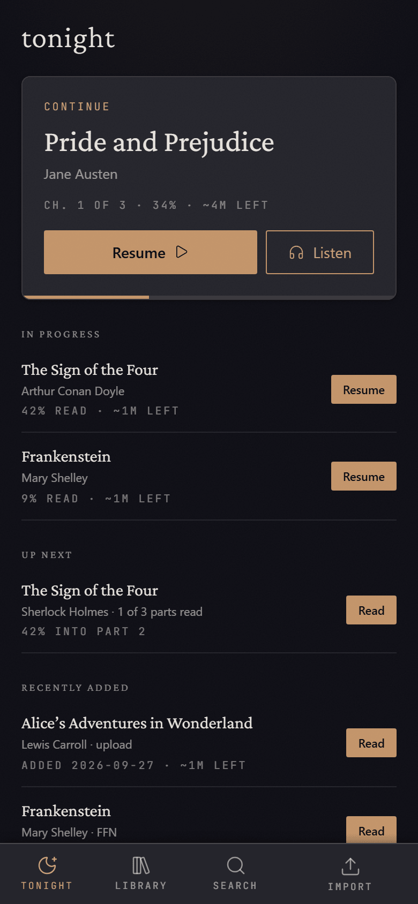
Tonight is where the app opens. The big Continue card is the story you read last: Resume opens it where you left off, and Listen opens it and starts reading aloud (in Safari, Listen opens the audio controls and you tap Play).
Below it:
- In progress — other stories you've started.
- New chapters — stories with new chapters waiting (see Checking for new chapters).
- Up next — the next part of a series you're working through.
- Recently added — your newest imports.
Tap a story's name to see its page; tap its button to jump straight into reading.
The Library tab
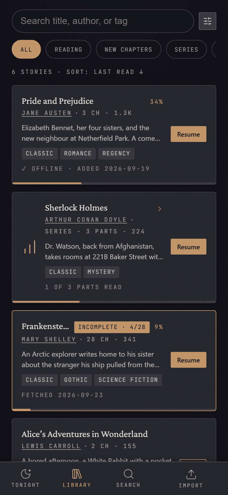
The Library tab lists everything you've added.
- Search box — type part of a title, author, or tag.
- Quick filters (the row of chips) — All, Reading (started but not finished), New chapters, Series, Complete (you've read it all). If your stories come from more than one site, there's a chip per site too, plus 📁 Uploaded for files you added yourself.
- Each row shows the title, author, length, summary and tags, plus a progress bar along the bottom edge and your percentage read. ✓ Offline means the story is saved on this phone. A badge like +2 NEW means new chapters are waiting; Incomplete · 4/28 means only part of it has been downloaded so far (see Incomplete stories).
- Tap the author's name to show only that author's stories.
- Series are grouped into a single card ("Series · 3 parts · 1 of 3 parts read"). Its button opens the part you're up to; tap the card to see every part.
- Tap a row to open the story's page. Tap its button (Read, Resume or Import) to go straight to reading.
The Search tab does the same kind of search across your whole library (titles, authors, tags and series names) and shows results as you type.
Sorting and filters
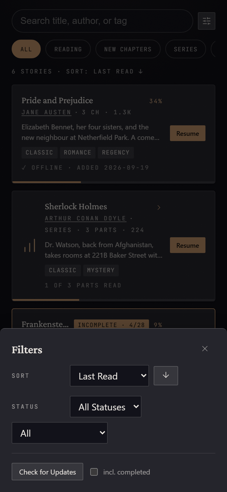
Tap the filter button next to the search box (or the "6 stories · Sort: …" line under the chips) to open Filters:
- Sort — Date Added, Last Read, Title, Author, Last Updated, Word Count or Progress. The arrow button flips the order.
- Status — whether the author has finished the story (Completed / In Progress). This is different from the Complete chip, which is about whether you've finished reading it.
- The second menu shows stories by download state: Imported, Incomplete, or Not Yet Imported.
- Format (only if you've added PDFs or comics) — Fiction, or Books & manga.
When any filter is on, a Clear filters button appears on the Library tab.
Checking for new chapters
Reader doesn't check for updates on its own. When you want to know if anything new has been posted:
- Open Filters and tap Check for Updates. Tick incl. completed first if you also want to re-check stories the author has marked finished.
- A progress line appears above your stories ("… 3 new chapters so far"). You can keep reading while it runs.
- Stories with new chapters get a +N NEW badge and appear under New chapters on Tonight. The badge clears when you open the story to read.
To update just one story, open its page and tap Re-fetch. The button turns amber when the site has posted chapters since your last fetch.
When a story has new chapters, Reader usually downloads just the new ones. So if an author also rewrote or reordered earlier chapters, tap Re-fetch once more after the chapter count matches the site — that pass re-checks every chapter.
Stories you added from a file are never checked; there's no site to check.
Adding stories
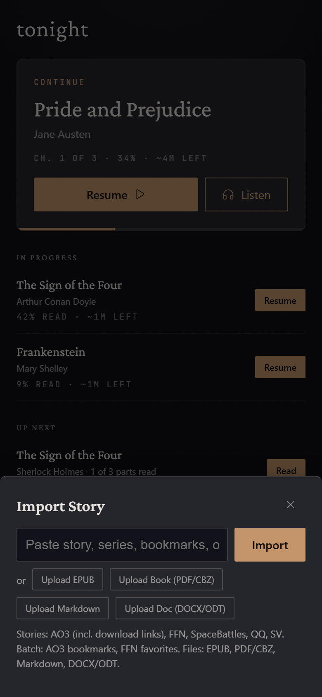
Tap Import in the tab bar.
From a website: paste the story's address into the box and tap Import. Supported sites are AO3, FanFiction.Net, SpaceBattles, Sufficient Velocity and Questionable Questing. You can close the sheet and keep reading — a small progress pill floats above the tab bar; tap it to reopen the sheet. A single story imported this way is also saved for offline reading on that phone when it finishes.
You can also paste:
- An AO3 series link — you get the list of works with checkboxes; pick the ones you want (Select All New skips ones you already have) and tap Import N Works.
- Your AO3 bookmarks page or a FanFiction.Net profile (then choose Favorites, Follows or Both) — every story on the list is added to your library as Not imported: just its title and details, ready for later. Tap Import on one when you want to read it. Scanning AO3 bookmarks is slow on purpose (AO3 allows about one request a second).
From a file:
- Upload EPUB — ebooks (for example from Project Gutenberg).
- Upload Book (PDF/CBZ) — PDFs and comics/manga, shown page by page (see Books and manga).
- Upload Markdown —
.mdor.txtfiles, e.g. your own writing. You choose whether it starts a new work or adds chapters to one you uploaded before. - Upload Doc (DOCX/ODT) — Word or Google Docs exports, either a finished work or one chapter of an ongoing one.
In progress: while anything is downloading — including fetches started from a story's page, from the share sheet, or on another device — the top of the Import sheet lists it with a live chapter count ("Chapter 35 of 72"). Check here before tapping a button a second time.
If an import fails, it's listed at the top of the Library with Retry and Dismiss buttons. If a site is blocking downloads for a while, the Import button shows a countdown ("Cooldown 12:30") and becomes available again when it reaches zero.
Incomplete stories
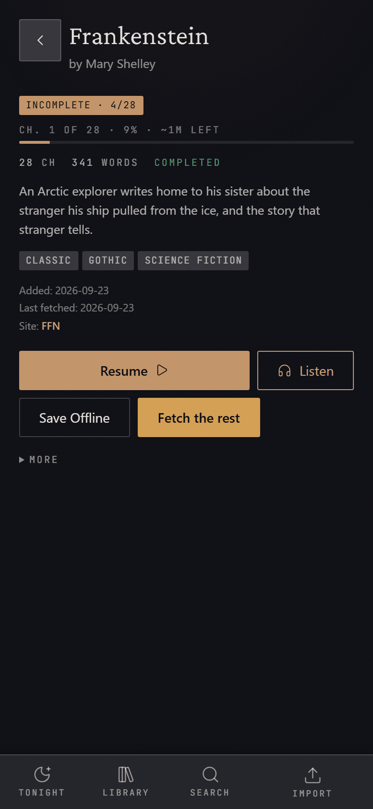
Some sites — FanFiction.Net especially — cut a long download off partway. Instead of throwing away what it got, Reader keeps it and marks the story Incomplete · 4/28 (4 of 28 chapters so far). You can start reading those chapters right away.
To get the rest:
- Wait about 30 minutes (the site needs a break).
- Open the story's page and tap Fetch the rest. Only the missing chapters are downloaded; you can watch it under In progress in the Import sheet.
- Very long stories may need a few rounds. If you tap too soon, you'll see a message saying how many minutes to wait.
When every chapter has arrived, the badge disappears.
The story page
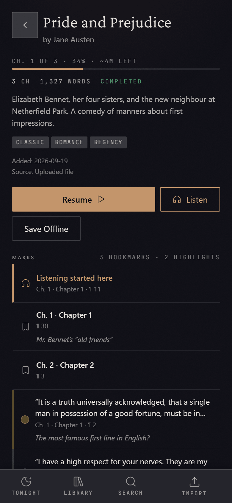
Tap any story's title to open its page: reading progress, the full summary, all tags, and dates.
- Resume / Read — open it in the reader.
- Listen — open it and start reading aloud.
- Save Offline — download every chapter to this phone (it changes to Cached when done).
- Re-fetch — check the site for changes to this story (not shown for uploaded files). On an incomplete story this button is Fetch the rest.
- Part 2 of … (only for stories in a series) — opens the series page.
- More — less common actions: Clear Progress, Delete, and for uploaded files Rename and Mark Complete.
Marks lists everything you've marked in the story: the 🎧 and ⏹ listening markers, your bookmarks (with their notes) and your highlights. Tap one to open the reader right at that spot. That spot becomes your new reading position.
Series
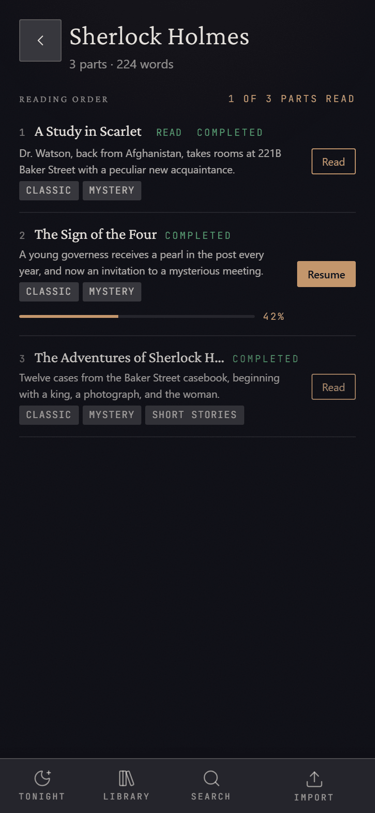
A series page lists every part in reading order with what you've read, and a Read / Resume button for each. Tap a part's title to see its own page.
Themes
Reader comes in seven themes — System (follows your phone's light/dark setting), Dark, Light, Sepia, Night (AMOLED), Solarized Light and Solarized Dark — and you can build your own (see Themes and your own colours). Tap Theme at the top of the Library tab, or the theme button in the reader. Your choice applies everywhere in the app.
Reading
Showing and hiding the controls
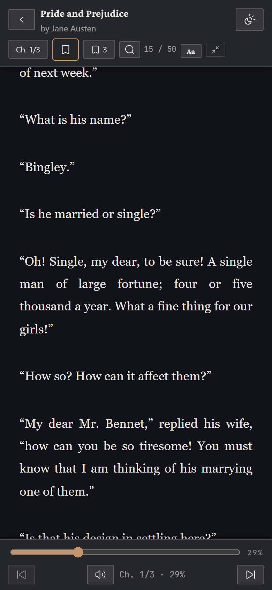
The reader opens full screen with just the text. Tap the page once to show the bars; tap again, scroll, or wait about five seconds and they hide.
The top bar, left to right: back to the library, the story title (tap it to see a long title in full), and the theme button. Below that: the chapter menu ("Ch. 1/3"), the bookmark button, the bookmarks list (with a count), find in story (magnifying glass), your paragraph number ("15 / 50"), Aa for text settings, and the control size button.
The bottom bar has a slider to jump anywhere in the story, previous and next chapter buttons, and the speaker button that opens the listening controls.
Moving around
- Scroll to read — the whole story is one long page.
- Chapter menu — tap "Ch. 1/3" and pick a chapter.
- Previous / next chapter — the arrow buttons at the ends of the bottom bar.
- Slider — drag it and let go to jump to that point.
- Find in story — tap the magnifying glass, type, and step through matches with the arrows.
Text settings (Aa)
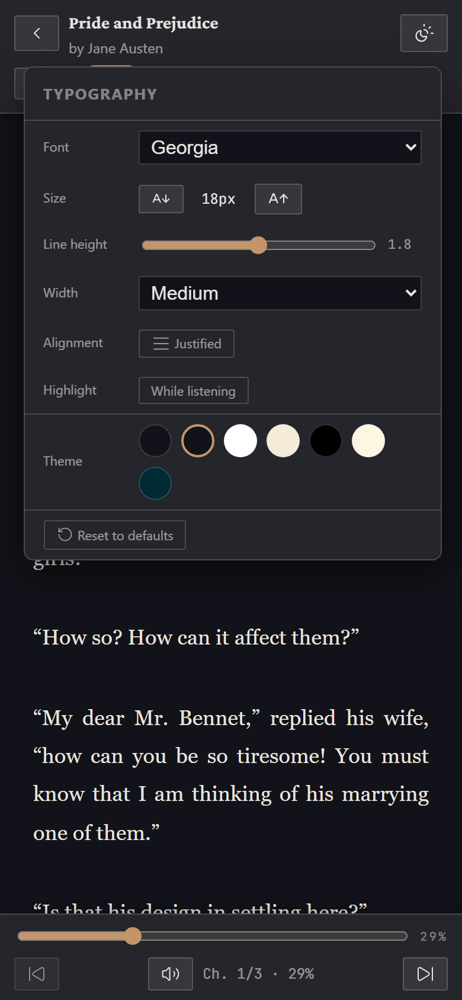
Tap Aa to change:
- Font — including OpenDyslexic.
- Size — the A↓ / A↑ buttons.
- Line height — the slider.
- Width — Narrow, Medium, Wide or Full (mostly matters on bigger screens).
- Alignment — Justified or Left.
- Highlight — whether the current paragraph is highlighted Always or only While listening.
- Theme — tap a swatch to switch preset themes quickly.
- Reset to defaults puts all of the above back.
Your text settings are saved to your account, so a new phone picks them up after you sign in.
Themes and your own colours
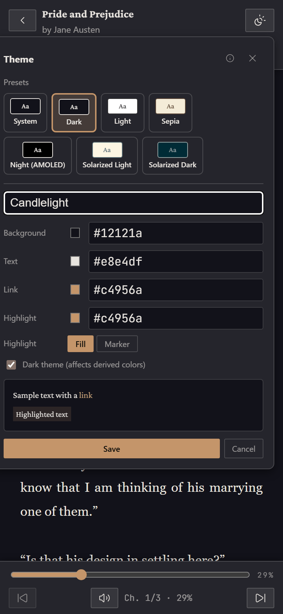
Tap the theme button (top right in the reader) to see all themes. To make your own:
- Tap + New custom theme, name it, and pick colours for Background, Text, Link and Highlight. Choose Fill or Marker for how highlights look, and tick Dark theme if your background is dark.
- The page changes colour as you tweak, so you can see the result.
- Tap Save.
To change a theme you made, tap its pencil icon. Edits apply and save as you go — there's no Save button for edits:
- Done closes the editor and keeps your changes.
- Cancel puts everything back the way it was when you opened the editor, even changes that were already saved.
- Closing any other way (tapping outside, or the ✕) keeps your changes.
Your custom themes are saved to your account and come back on a new device. You can also Export a theme as a file to share it, and Import one someone shares with you.
Control size and landscape
The control size button (next to Aa) switches the reader's buttons between Compact and Comfy. Comfy makes every control bigger and easier to hit — handy in the car.
Turn your phone sideways and the bars shrink to a single slim row so more text fits. In the iPhone app, the top bar also has a rotation lock button so the page stays put when you lie down.
Your place
Reader remembers where you are in every story and opens there next time — on this phone and on any other device where you sign in. Just close the app; there's nothing to save.
When you reach the very end of a story, a Done button appears in the top bar. It removes the offline copy from this phone to free up space; the story stays in your library.
Bookmarks
Tap the bookmark button in the top bar to bookmark the paragraph you're on; it fills in. Tap it again to remove the bookmark (an Undo appears for a few seconds).
Tap the bookmarks list button (the one with a number) to see them all. Tap a bookmark to jump to it; use the pencil to add or edit a note, and the bin to delete it.
Highlights and notes
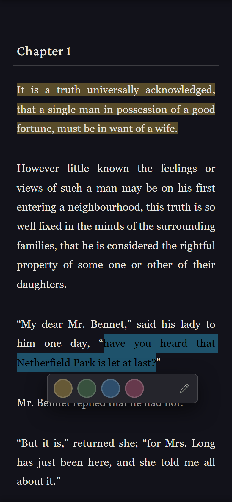
- Press and hold on a word, then drag the handles to cover the passage you want.
- Tap one of the four colours (yellow, green, blue, pink) that appear under it. To add a note at the same time, tap the pencil first, type, then pick a colour.
Tap a highlight later to change its colour, edit its note, or delete it. The Highlights tab in the bookmarks list shows them all and can copy or download them as a text file (Markdown).
Look up a word: press and hold a single word to see its definition. This needs an internet connection.
Books and manga
PDFs and comics (CBZ) open in a page-by-page reader instead:
- Switch between vertical scrolling and one page at a time.
- In one-page mode, swipe or tap the sides to turn pages, and pinch or double-tap to zoom. Comics read right to left by default; there's a button to change the direction.
- Tap the play button to hear the page read aloud. If a scanned PDF has no text to read, open its page, tap More → Recognize Text, and wait — after that, read-aloud and search work.
Listening
Reader can read any story out loud while you drive, cook, or fall asleep.
Start listening
Any of these starts narration:
- Listen on Tonight or on a story's page.
- In the reader, tap the speaker button in the bottom bar, then Play.
- Double-tap any paragraph to start reading from there.
The paragraph being read is highlighted and the page follows along.
The listening controls
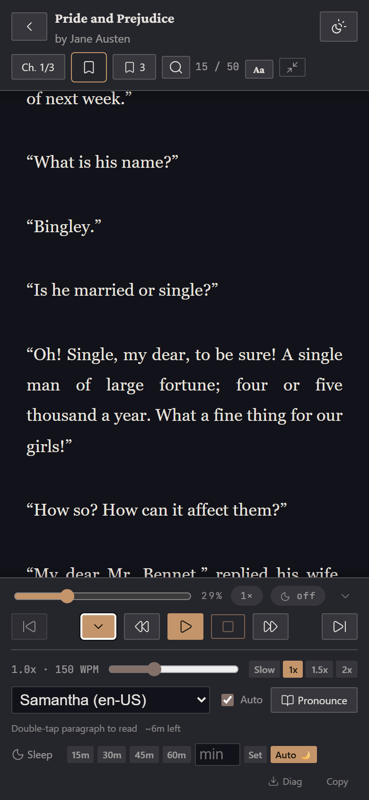
- Top row — the position slider, your percentage, a speed chip ("1×": tap to cycle 1× → 1.5× → 2× → 0.7×) and a sleep chip ("off": tap to cycle 15, 30, 45, 60 minutes and off). The small arrow at the end folds the settings away and back.
- Buttons — previous chapter, hide the controls (audio keeps playing), previous paragraph, Play/Pause, Stop, next paragraph, next chapter.
- Speed — the slider or the Slow / 1x / 1.5x / 2x buttons.
- Voice — pick from the voices on your phone.
- Auto — keep going paragraph after paragraph (untick it to hear one paragraph at a time).
- Pronounce — teach the voice how to say names it gets wrong: type the word and what it sounds like (e.g. "Jaime" → "Jay-mee"). Entries can apply to every story (Global) or just This story.
- Sleep — the timer (below).
- Diag and Copy — for troubleshooting (see Something went wrong with listening).
Speed and voice are remembered on each device separately.
Sleep timer
Tap a time in the Sleep row (15m, 30m, 45m, 60m), or type your own number of minutes and tap Set. Narration stops when it runs out. The timer only counts down while the story is actually being read — pause for dinner and your minutes wait for you. Cancel stops the timer.
Auto 🌙 (on by default) sets the timer for you at night: if you start listening between 10 pm and 5 am — or you're still listening when 10 pm comes around — it starts a timer using the length you picked last time (45 minutes if you've never set one). A message pops up with a Cancel button in case you want to keep going. Tap Auto 🌙 to turn this off.
Lock screen, CarPlay and headphones
In the iPhone app, narration keeps playing with the screen locked. The lock screen and Control Center show the story's title with play/pause, and the skip buttons move back or forward one paragraph. Audio goes wherever your phone's audio goes — AirPods, Bluetooth speakers, or your car. In the car, play/pause and skip work from CarPlay or the steering wheel; start the story on your phone (Reader has no icon on the CarPlay screen).
The 🎧 and ⏹ markers
Every time you start listening, Reader drops a 🎧 Listening started here marker where you were. When narration stops, it moves a ⏹ Listening stopped here marker to where the voice got to. If you fell asleep, the 🎧 marker takes you back to the last part you actually heard awake.
You'll find both at the top of the bookmarks list and under Marks on the story's page. There's only ever one of each per story; you can delete them like any bookmark. (If you ever see two of the same, delete the extra one and mention it to the person who invited you.)
On the go
Reading without a signal
Stories marked ✓ Offline in your library are saved on your phone and open without any connection — on a plane, underground, or with Tailscale switched off.
- A single story you import from the Import sheet is saved automatically on that phone when the import finishes.
- For anything else — series, stories added from a list, files, or stories imported on another device — open the story's page and tap Save Offline.
Without a connection the Library shows a notice at the top and still lists your stories, but only the saved ones will open. Tonight needs a connection. Your reading position is saved on the phone as you go and syncs again once you're connected.
Sharing to Reader from other apps
In the iPhone app, you can send things to Reader from Safari, Files, Mail and most other apps:
- Tap the app's Share button and choose paperhurts (if it isn't in the row of apps, scroll to the end of the row, tap More, and pick it there).
- A small panel says ✓ Saved to paperhurts and closes by itself.
- The next time you open Reader, it imports what you shared.
You can share:
- A story link from any supported site.
- Documents — Word (DOCX), OpenDocument (ODT), EPUB, Markdown and plain text files.
PDFs and comics can't be shared this way — they can be very large. Add them with Import → Upload Book (PDF/CBZ) inside the app instead.
API tokens (Safari only)
The API Tokens button at the top of the Library is only for people who use Reader in Safari and want an iPhone Shortcut to send links to it. (The iPhone app's share button doesn't need one.) A token can only import stories, but treat it like a password. Ask the person who invited you for the Shortcut.
Troubleshooting
"Couldn't reach your library"
Reader can't talk to the server. Almost always:
- Tailscale is off. Open the Tailscale app, switch it on, then go back to Reader and open the Library tab again.
- No signal. Your saved (✓ Offline) stories still work.
If both are fine and it still can't connect, the server may be down — let the person who invited you know.
The screen dims but doesn't turn off
That's the iPhone's Always-On Display (iPhone 14 Pro and later), not Reader: when the phone locks, the screen dims instead of going black. To get a fully black screen, turn on Low Power Mode (which turns Always-On off) or switch off Settings → Display & Brightness → Always On Display.
If the screen dims while you're using it, even at full brightness, the phone is probably warm — iPhones lower brightness when they heat up.
The voices are different on my other device
Voices come from each device, not from Reader, so every phone, tablet and browser has its own list — and the app and Safari can differ. For nicer voices on iPhone, go to Settings → Accessibility → Spoken Content → Voices → English and download an Enhanced or Premium voice, then choose it in Reader's voice menu.
An import stopped partway
That's normal for very long stories on some sites. The story is kept as Incomplete — see Incomplete stories. Wait about half an hour, then tap Fetch the rest.
If a fetch seems stuck, open Import and look under In progress before tapping anything again; a second tap while one is running just tells you it's already being fetched.
Something went wrong with listening
If narration stops, skips, or misbehaves, send the person who invited you a diagnostics file:
- Open the story, tap the speaker button, and make sure the settings are showing.
- Tap Diag (bottom right). In the iPhone app, the share sheet opens with a small file — send it by Messages or Mail. Copy puts the same information on the clipboard instead, to paste into a message.
The file records what the voice and the app were doing — play, pause, skips, which voice, how long things took to load, whether the phone was warm — not the text of your stories.
In the iPhone app there's also a Route button next to Diag. Leave it on App unless the person who invited you asks you to try another setting (for example if narration sounds choppy over CarPlay).
When the app itself hits an error, it quietly sends a short technical report to the server so it can be fixed. The report never includes what you're reading.